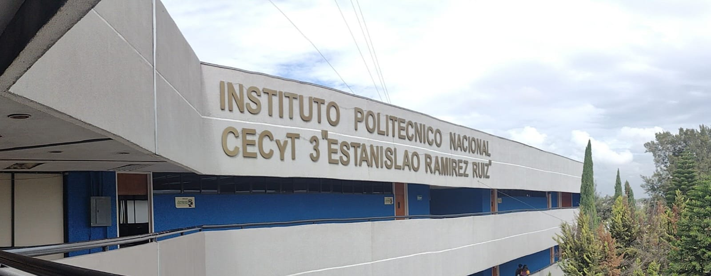

propocito
mi opinin

Mis Aspiraciones Futuras
Mi meta principal es terminar mis estudios de manera exitosa, adquirir todos los conocimientos posibles y formarme como un profesional competente en el área de la biología, tecnología y estudios científicos. Me gustaría trabajar en algo que realmente me apasione, desarrollando proyectos útiles y creativos que aporten soluciones y sirvan para ayudar a las personas.
En un futuro cercano me gustaría poder tener mi propio espacio y contribuir económicamente para darle a mi familia todo lo que se merece, retribuyendo así todo el apoyo, el cariño y el esfuerzo que han hecho por mí durante todos estos años. También sueño con seguir aprendiendo constantemente, conocer nuevos lugares y culturas, y ser una persona de bien que deje una huella positiva donde quiera que vaya.